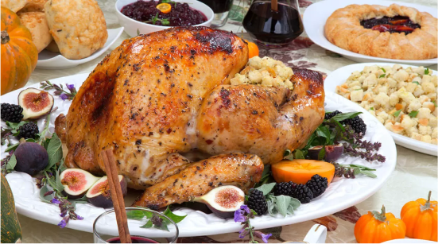
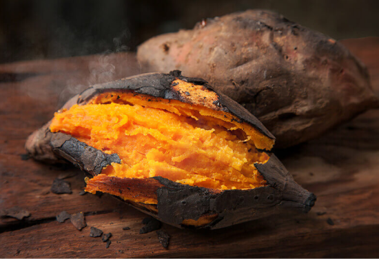
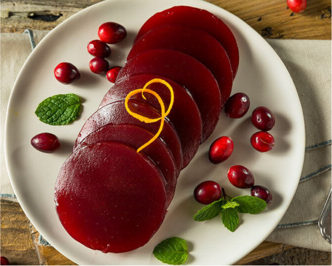
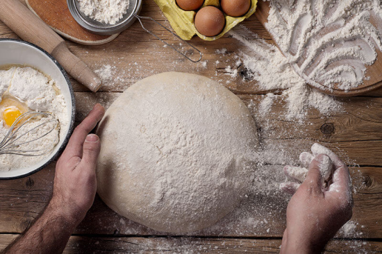

Science
Tryptophan in Turkey
- The common myth that turkey causes drowsiness due to tryptophan is partly true.
- Tryptophan contributes to serotonin and melatonin production, but turkey isn't uniquely high in this amino acid.
- Thanksgiving sleepiness is more likely due to overeating and the variety of rich foods.


Beta Carotene in Sweet Potatoes and Carrots
- These orange vegetables are rich in beta carotene, which the body converts into vitamin A, essential for vision and immune health.
- Cooking enhances beta carotene absorption, making roasted dishes especially nutritious.
Proanthocyanidins (PACs) in Cranberries
- Cranberries contain PACs, which may help prevent bacteria from sticking to the bladder wall, potentially aiding in UTI prevention.
- Evidence on their effectiveness remains mixed, but cranberries also have antioxidants linked to cardiovascular and immune health.


Yeast in Bread and Beer
- Yeast is essential for bread rising and beer bubbling by fermenting sugars into carbon dioxide and ethanol.
- Beyond food, yeast serves as a valuable model in scientific research, helping to study cell division and disease mechanisms.